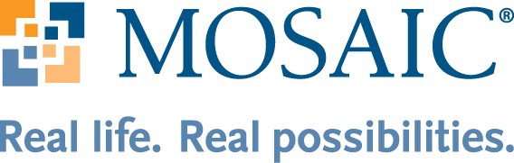

Agency Spotlight
This segment highlights an agency that helps to meet the short-term effects of the disabilities discrimination in Omaha.

Agency:
Mosaic
About:
Mosaic is an organization based in Omaha, NE, that seeks to help people with disabilities. As a part of their core outreach services, Mosaic hosts a day service, provides housing, and helps families care for their loved ones by providing various types of therapy and relief assistance. For more information about Mosaic or how you can help a loved one, please visit Mosaic's website.
Mosaic's Mission:
Embracing God’s call, Mosaic relentlessly pursues opportunities that empower people.
Mosaic's Impact:
Mosaic has impacted the lives of Omahans with disabilities in many ways, including (but not limited to):
-
Student-Designed Emergency Operations Plan Meets Regulatory Requirements
An article published on the Mosaic blog page discusses how students at UNO were inspired by Chris Grimm, a local Omaha resident who lives with Down Syndrome, to create an emergency operations plan for organizations like Mosaic to help shelter individuals with special needs during times of extreme weather. The plan meets all local and federal regulations and was gifted to Mosaic by the students at UNO to be adaptably used in Mosaic's 37 agencies. Because of this plan, many individuals who would have otherwise struggled in a severe storm will be able to quickly and effectively seek shelter like those of us without those same challenges.
-
Raising Funds for Education Programs
With the help of local advocate Emma Jane Grimm, Mosaic has raised several hundred thousand dollars in the last deacde to provide education programs and therapy to challenged individuals. When Chris Grimm, Mrs. Grimm's son who lives with Down Syndrome, was in elementary school, he was refused speech therapy because it was a "waste of tax payer dollars." Now, Chris receives regular speech therapy and frequently joins Mrs. Grimm to speak at Mosaic's care-giver training events. He has also been known to sing to his favorite Beatles songs, including Lucy in the Sky With Diamonds and All You Need is Love.